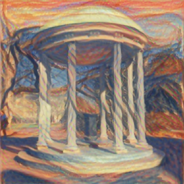
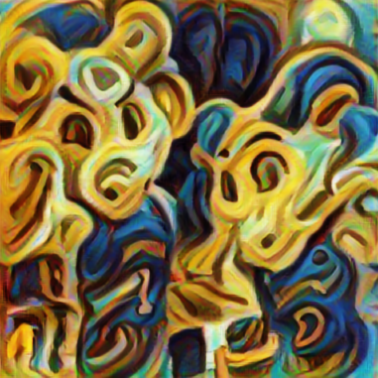
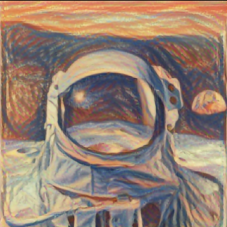
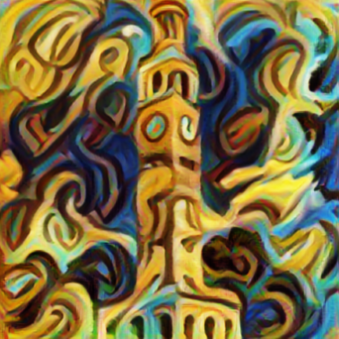
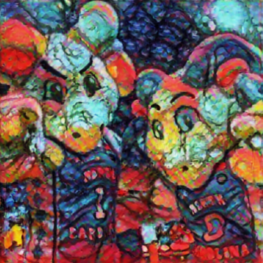
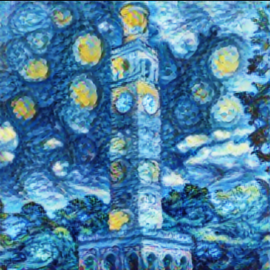

Image art styler is a project that my team submitted for Pearl Hacks hackathon in 2022. We built an image art styler utilizing a tensorflow arbitrary neural artistic stylization network. This allows the user to combine a content image, such as an astronaut or the Old Well, with a style image of a painting or similar pattern.
For this project, the team won Credit Suisse: Best use of Machine Learning / Artificial Intelligence
To try it for yourself, visit this website our team created. You can also check here for more information about our project and submission.
A few cool examples are displayed below:





